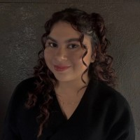

Student
Re-started La Voz Latina, the Latinx newspaper on campus. Managed a team of 30 to cover the Latinx community in Prince George’s County and on campus at the University of Maryland. Edited, wrote, reported, and created/managed the website as well as oversaw the hiring process for the staff on paper. Publish stories in English and in Spanish.
Assist the Editor-in-Chief in the management of 30+ members as well as write, report and edit stories that cover the Latinx community in Prince George’s County and on campus at the University of Maryland. Help publish stories in both English and Spanish.
Create content in Spanish including videos, web features, articles, social media posts and other media products to refine the strategy to reach Spanish-speaking communities and media outlets in the U.S. and beyond. Additionally help book stations for live-shot campaigns and ensure that each interview takes place.
Worked as an intern in the Student Reporting Labs. Duties consisted of creating educational social media content, editing, filming, and interviewing as well as attending or assisting at staff meetings.
Wrote articles on different topics ranging from politics to features and attended workshops and lectures taught by professional journalists around the country, including Jorge Ramos, Mina Kimes and Don Lemon.
Worked as an intern at Seacrest Studios. Duties consisted of creating original programming, interviewing guest speakers, hosting shows on the closed-circuited channel and radio as well as managing the JVC and OPX systems and working with patients.